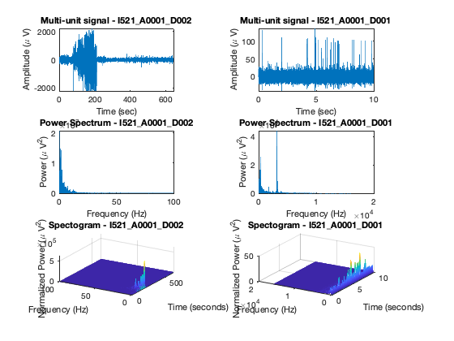
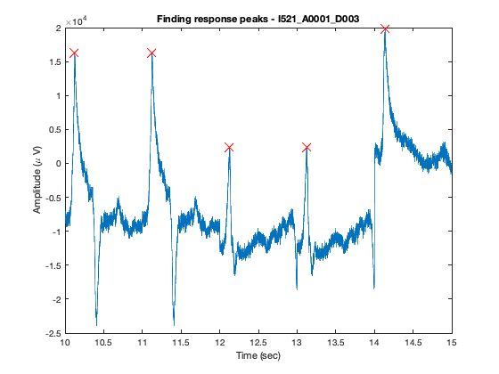
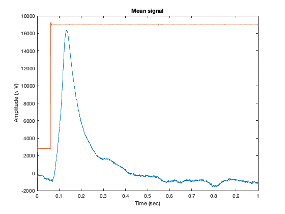
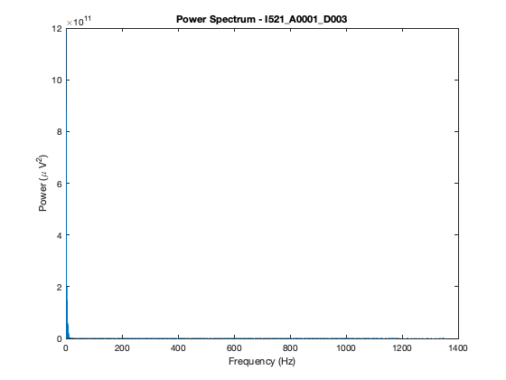
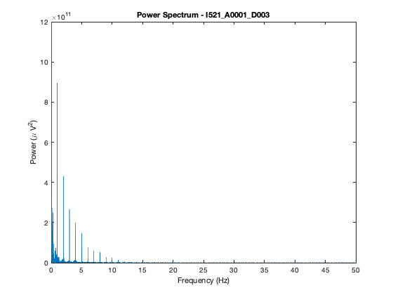
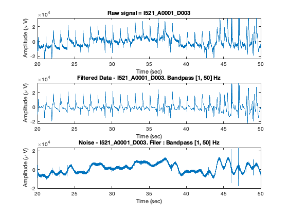
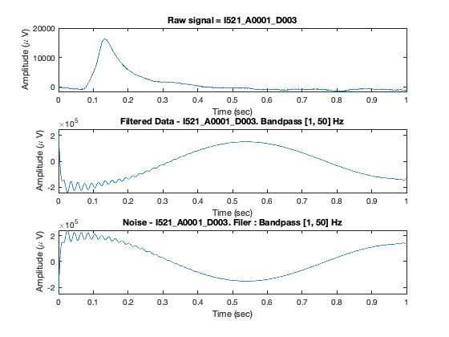

%Adding workspace path addpath(genpath('/Users/jalpanchal/git/be521')); %create session % dataset I521_A0001_D002. session_sez = IEEGSession('I521_A0001_D002', 'jalpanchal', 'jal_ieeglogin.bin'); %Calculate sampling frequency in Hz sampling_frequency_hz = session_sez.data.sampleRate %Maximum resolvable frequency = sampling frequncy/2. max_resolvable_freq = sampling_frequency_hz/2
IEEGSETUP: Adding 'ieeg-matlab.jar' to dynamic classpath Warning: Objects of edu/upenn/cis/db/mefview/services/TimeSeriesDetails class exist - not clearing java Warning: Objects of edu/upenn/cis/db/mefview/services/TimeSeriesInterface class exist - not clearing java IEEGSETUP: Found log4j on Java classpath. URL: https://www.ieeg.org/services Client user: jalpanchal Client password: **** sampling_frequency_hz = 200 max_resolvable_freq = 100
duration_in_usec = session_sez.data(1).rawChannels(1).get_tsdetails.getDuration;
duration_in_sec = duration_in_usec/1e6
disp("This resording has a duration of 644.995s as compared to 10s for I521_A0001_D001")
duration_in_sec = 644.9950 This resording has a duration of 644.995s as compared to 10s for I521_A0001_D001
%To plot frequency spectrum of each of the signals %I521_A0001_D002 fs = sampling_frequency_hz; len = duration_in_sec; t = 0:1/fs:len-1/fs; x = session_sez.data.getvalues(1, len * 1e6, 1); y = fft(x); n = length (x); f = (0:n-1)*(fs/n); power = abs(y).^2/n; figure(); subplot(3,2,3); plot(f(1:floor(n/2)),power(1:floor(n/2))) title('Power Spectrum - I521\_A0001\_D002') xlabel('Frequency (Hz)') ylabel('Power (\mu V^2)') %Plot of signal in time domain subplot(3,2,1); plot(t, x); ylabel('Amplitude (\mu V)'); xlabel('Time (sec)'); title('Multi-unit signal - I521\_A0001\_D002'); %plotting a spectogram subplot(3,2,5); [p,f,t] = pspectrum(x,fs,'spectrogram'); waterfall(f,t,p'); xlabel('Frequency (Hz)') ylabel('Time (seconds)') zlabel('Normalized Power (\mu V^2)') title('Spectogram - I521\_A0001\_D002'); wtf = gca; wtf.XDir = 'reverse'; view([30 45]) %I521_A0001_D001 %Plot of Power Spectrum session_1 = IEEGSession('I521_A0001_D001', 'jalpanchal', 'jal_ieeglogin.bin'); sampling_frequency_hz_1 = session_1.data.sampleRate; duration_in_sec_1 = session_1.data(1).rawChannels(1).get_tsdetails.getDuration/1e6; fs = sampling_frequency_hz_1; len = duration_in_sec_1; t = 0:1/fs:len-1/fs; x = session_1.data.getvalues(1, len * 1e6, 1); y = fft(x); n = length (x); f = (0:n-1)*(fs/n); power = abs(y).^2/n; %Plotting power spectrum subplot(3,2,4); plot(f(1:floor(n/2)),power(1:floor(n/2))) title('Power Spectrum - I521\_A0001\_D001') xlabel('Frequency (Hz)') ylabel('Power (\mu V^2)') %Plot of signal in time domain subplot(3,2,2); plot(t, x); ylabel('Amplitude (\mu V)'); xlabel('Time (sec)'); title('Multi-unit signal - I521\_A0001\_D001'); %plotting a spectogram subplot(3,2,6); [p,f,t] = pspectrum(x,fs,'spectrogram'); waterfall(f,t,p'); xlabel('Frequency (Hz)') ylabel('Time (seconds)') zlabel('Normalized Power (\mu V^2)') title('Spectogram - I521\_A0001\_D001'); wtf = gca; wtf.XDir = 'reverse'; view([30 45])
IEEGSETUP: Adding 'ieeg-matlab.jar' to dynamic classpath Warning: Objects of edu/upenn/cis/db/mefview/services/TimeSeriesDetails class exist - not clearing java Warning: Objects of edu/upenn/cis/db/mefview/services/TimeSeriesInterface class exist - not clearing java IEEGSETUP: Found log4j on Java classpath. URL: https://www.ieeg.org/services Client user: jalpanchal Client password: ****
session_ep = IEEGSession('I521_A0001_D003', 'jalpanchal', 'jal_ieeglogin.bin'); sampling_frequency_hz_ep = session_ep.data.sampleRate; duration_in_sec_ep = session_ep.data(1).rawChannels(1).get_tsdetails.getDuration/1e6; ep_data = session_ep.data.getvalues(0, duration_in_sec_ep * 1e6, 1); stimulus_data = session_ep.data.getvalues(0, duration_in_sec_ep * 1e6, 2); %Making the vector size divisible by frequency to create a rectangular %matrix of width = frequency ep_data = [ep_data; 0]; stimulus_data = [stimulus_data; 0]; %We now have each row in the matric as a 1 sec segment of the signal ep_data_bin = reshape(ep_data, sampling_frequency_hz_ep, [])'; stimulus_data_bin = reshape(stimulus_data, sampling_frequency_hz_ep, [])'; [ep_data_max, ep_data_max_indx] = max(ep_data_bin, [], 2); %Calculating mean delay in response by finding the mean delay for the max %value. Here as the data is binned at every sec, the trigger is at the %start of every bin. So the location in the bin should directly give us the %delay from the onset of the trigger. disp("Average latency(in ms) of the peak response to the stimulus onset over all trials") ep_data_peak_mean_delay_ms = (mean(ep_data_max_indx)/sampling_frequency_hz_ep)*1000 %Plot D003 with peaks time_frame = 10 : 1/sampling_frequency_hz_ep : 15-1/sampling_frequency_hz_ep; figure(); temp_ = ep_data_bin'; temp_ = reshape(temp_(:,10:14),[],1)'; plot(time_frame', temp_); hold on temp_ = []; for n = 10:14 temp_ = [temp_,(ep_data_bin(n,ep_data_max_indx(n)))]; end plot((10:14) + (ep_data_max_indx(10:14)./sampling_frequency_hz_ep)', temp_, 'rx', 'MarkerSize', 10); ylabel('Amplitude (\mu V)'); xlabel('Time (sec)'); title('Finding response peaks - I521\_A0001\_D003');
IEEGSETUP: Adding 'ieeg-matlab.jar' to dynamic classpath Warning: Objects of edu/upenn/cis/db/mefview/services/TimeSeriesDetails class exist - not clearing java Warning: Objects of edu/upenn/cis/db/mefview/services/TimeSeriesInterface class exist - not clearing java IEEGSETUP: Found log4j on Java classpath. URL: https://www.ieeg.org/services Client user: jalpanchal Client password: **** Average latency(in ms) of the peak response to the stimulus onset over all trials ep_data_peak_mean_delay_ms = 162.1508
ep_data_mean_bin = mean(ep_data_bin,1); stimulus_data_mean_bin = mean(stimulus_data_bin,1); time_frame = 0 : 1/sampling_frequency_hz_ep : 1-1/sampling_frequency_hz_ep; figure(); plot(time_frame', ep_data_mean_bin); hold on plot(time_frame', stimulus_data_mean_bin); ylabel('Amplitude (\mu V)'); xlabel('Time (sec)'); title('Mean signal');
We can first begin by plotting the frequency response of the signal
fs = sampling_frequency_hz_ep; len = duration_in_sec_ep; t = 0:1/fs:len-1/fs; x = session_ep.data.getvalues(1, len * 1e6, 1); y = fft(x); n = length (x); f = (0:n-1)*(fs/n); power = abs(y).^2/n; %Plotting power spectrum figure(); plot(f(1:floor(n/2)),power(1:floor(n/2))) title('Power Spectrum - I521\_A0001\_D003') xlabel('Frequency (Hz)') ylabel('Power (\mu V^2)')
%Plotting power spectrum figure(); plot(f(1:floor(n/2)),power(1:floor(n/2))) title('Power Spectrum - I521\_A0001\_D003') xlabel('Frequency (Hz)') ylabel('Power (\mu V^2)') xlim([0,50])
%We will remove the noise from the signal by first removing the mean from %the signal and then using a band pass filter with a lower cut-off of 1Hz %and a upper cut-off of 50 Hz ep_data_mean_sub = ep_data - mean(ep_data); %Using a bandpass filter cut_off_freq = [1 50]; x = ep_data_mean_sub; fs = sampling_frequency_hz_ep; len = size(ep_data_mean_sub,1); t = 0:1/fs:duration_in_sec_ep+1/fs; ep_filtered = bandpass(x, cut_off_freq, fs); y = ep_filtered; ep_noise = ep_data - ep_filtered; %Selecting plotting range : 20-50s of signal figure(); plotting_range = sampling_frequency_hz_ep*20:1:sampling_frequency_hz_ep*50; subplot(3,1,1); plot(t(plotting_range)',x(plotting_range)); title('Raw signal = I521\_A0001\_D003') xlabel('Time (sec)') ylabel('Amplitude (\mu V)') xlim([20,50]) subplot(3,1,2); plot(t(plotting_range)',y(plotting_range)); title('Filtered Data - I521\_A0001\_D003. Bandpass [1, 50] Hz') xlabel('Time (sec)') ylabel('Amplitude (\mu V)') xlim([20,50]) subplot(3,1,3); plot(t(plotting_range)',ep_noise(plotting_range)); title('Noise - I521\_A0001\_D003. Filer : Bandpass [1, 50] Hz') xlabel('Time (sec)') ylabel('Amplitude (\mu V)') xlim([20,50])
disp("Mean of noise across all trials in \mu V") mean_ep_noise_uV = mean(ep_noise) disp("This value includes the low frequency baseline modulations, which is also noise") disp("")
Mean of noise across all trials in \mu V mean_ep_noise_uV = 1.0398e+03 This value includes the low frequency baseline modulations, which is also noise
cut_off_freq = [1 50]; x = ep_data_mean_bin; fs = sampling_frequency_hz_ep; len = size(x,2); t = 0:1/fs:1; ep_mean_filtered = bandpass(x, cut_off_freq, fs); y = ep_mean_filtered; ep_mean_noise = ep_data_mean_bin - ep_mean_filtered; %Selecting plotting range : 20-50s of signal figure(); plotting_range = t(1:end-1); subplot(3,1,1); plot(plotting_range',x); title('Raw signal = I521\_A0001\_D003') xlabel('Time (sec)') ylabel('Amplitude (\mu V)') subplot(3,1,2); plot(plotting_range',y); title('Filtered Data - I521\_A0001\_D003. Bandpass [1, 50] Hz') xlabel('Time (sec)') ylabel('Amplitude (\mu V)') subplot(3,1,3); plot(plotting_range',ep_mean_noise); title('Noise - I521\_A0001\_D003. Filer : Bandpass [1, 50] Hz') xlabel('Time (sec)') ylabel('Amplitude (\mu V)')